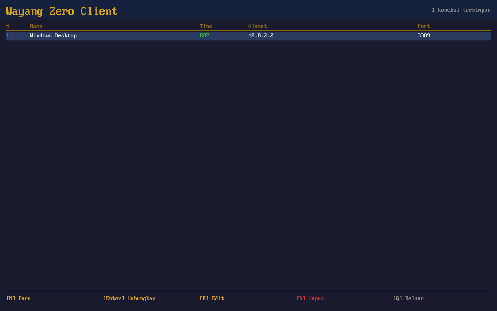
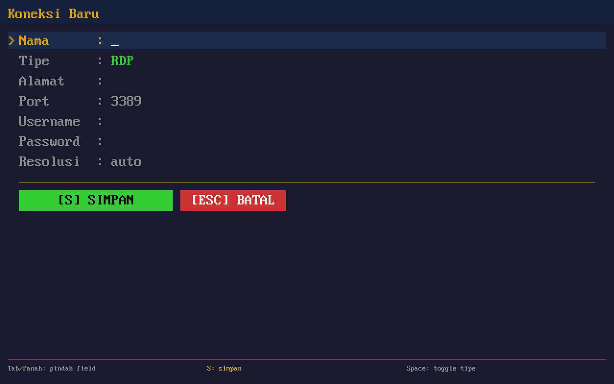
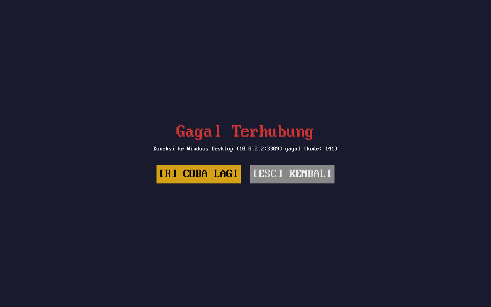

Screenshots

Welcome Screen — boot straight into the client

Connection Manager — saved RDP & VNC connections

Edit Connection — full keyboard-driven form

Connecting — progress indicator during handshake

Error Handling — clear retry/back options